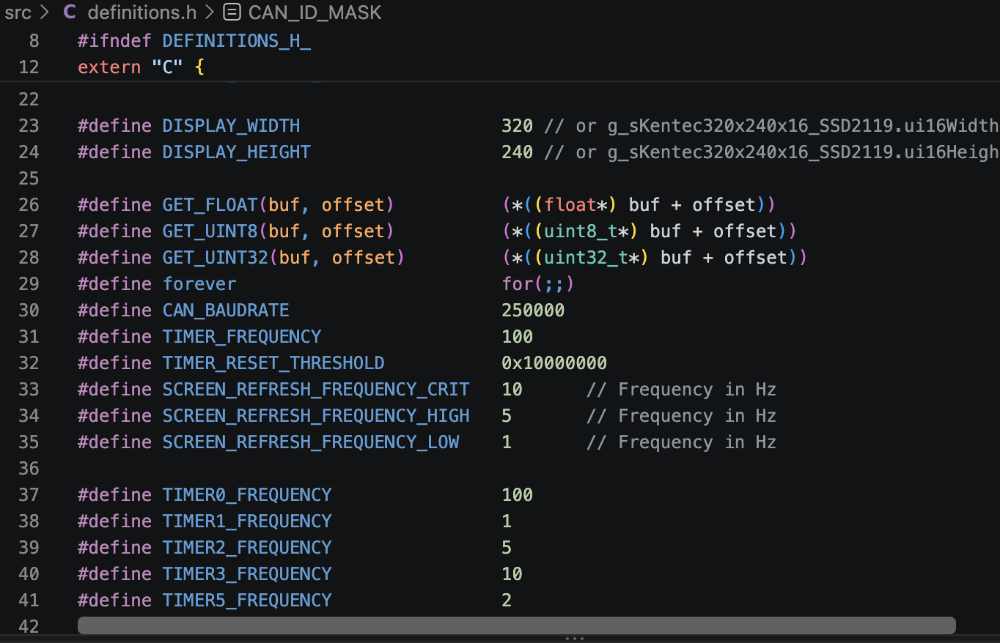

Display board firmware
Updating the driver display on Halo, the team's new solar car.

Background
The team's previous car, SR4 "Aurora," was the only four-person vehicle in its race, and Georgia Tech won with it. Its driver display ran on a TI Tiva microcontroller. For the new car, Halo, a lot changed, including the main structure, and the display needed updates too.
What we changed
The display is the driver's main view of the car: speed, current draw, pack voltage and temperature, and the status of systems like the BMS, GPS, and telemetry. We updated fonts and parts of the layout to match what the drivers wanted and to keep up with changes in competition rules. This was my recruit project, and I did it with a partner.
How we tested it
We edited the Tiva code, flashed it to the display board, and tested it on the bench over and over, using CANalyzer to see what was happening on the car's CAN bus. It was my first time testing firmware on real hardware.
I also had to learn how the codebase is laid out. Things like the 320×240 screen size, the 250 kbps CAN bus speed, and separate refresh rates for critical and non-critical information are all set in a shared definitions file that the rest of the code depends on.

What's next
Only a few people still on the team know Tiva well, so we're porting the firmware to STMLib, which more members can work with. After that, the plan is to design a new PCB and schematic for the display board from scratch next semester.